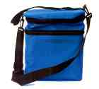
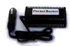

| |
Breast Pumps and Accessories
BabyTown is pleased to offer the Nurture III breast pump, made by Bailey Medical Engineering. This pump is internationally respected and highly recommended by many lactation consultants. The ergonomically designed pump helps stimulate the nipples and encourages let-down to make pumping easier.
For more information on using breast pumps look at the "Breast Feeding Answers" Provided by Ameda/Egnell.
 |
Nurture III Double Electric Breast Pump with CaringBag Insulated Tote and Video
Everything a you need to express, cool and store your milk in one convenient package. Includes: Nurture III Double Electric Breast Pump, CaringBag Insulated Tote with Blue Ice, four extra Bottles with Screw Rings and Disks, and our Instructional Video - $119.95 |
 |
Nurture III Double Electric Breast Pump
The Nurture III is a small, quiet, efficient electric breast pump which can be used for double or single pumping. Five settings for suction control and user-regulated cycle time allow imitation of baby's sucking. Its light weight and compact design make it extremely portable and it is durable and reliable enough for many years of frequent use. The instructions are clearly illustrated and easy to
understand. Includes: Nurture III Pump Motor, Double Collection Kit, and Instruction Manual - $89.95 |
 |
Double Collection Kit
Everything you need to double or single pump with the Nurture III Motor. Includes: 2 flanges, 2 Bottles, 2 Bottle Stands, 3 Gaskets (1 spare), 2 Overflow Filters (1 spare), Long Tube, Short Tube, 2 Double Caps, Single Cap, 2 Screw Rings and Disks, and brief instructions -$24.95 |
 |
Collection Kit
Everything needed to pump one breast at a time with the Nurture III. Includes: Bottle, Bottle Stand, Flange, 2 Gaskets (1 spare), 2 Overflow Filters (1 spare), Long Tube, Single Cap, Screw Ring and Disk, and brief instructions - $14.95 |
 |
CaringBag Insulated Tote
This attractive navy-blue nylon tote bag has a comfortable shoulder strap and is just the right size to hold the pump and collection sets in its top compartment, while the bottom section holds an ice pack (included) and cools up to six 5-ounce bottles of expressed milk for as long as 16 hours. Measures 5"x8.5"x10". - $24.95 |
 |
Lac-Tote
Designed by a working mom, this is the best milk cooler you can buy. Because it holds warm milk snugly against ice packs, it cools faster than a refrigerator and keeps your milk cold for up to 24 hours, preventing spoilage. There's room in the separate upper compartment to hold your Nurture III pump and collection sets. Measures 8"x10.5"x12". Includes: Royal-blue or silver nylon bag with
detachable nylon shoulder strap, Cold chest with 2 ice packs, and 3 flat-sided 9-ounce storage bottles. - $34.95 |
 |
Power Inverter
This great little device enables you to power your Nurture III pump (or other AC-powered
equipment up to 100W) from a car's cigarette lighter. Measures 1.75" x 3.75" x 5".
$55.00 |
 |
Parts Kit
A collection of the most frequently requested spare parts for the Nurture III. Includes: Long
Tube, Short Tube, 2 Overflow Filters, 2 Gaskets, 2 Double Caps, and a Single Cap. - $9.00
Other parts for the Nuture III are available upon request. |

|